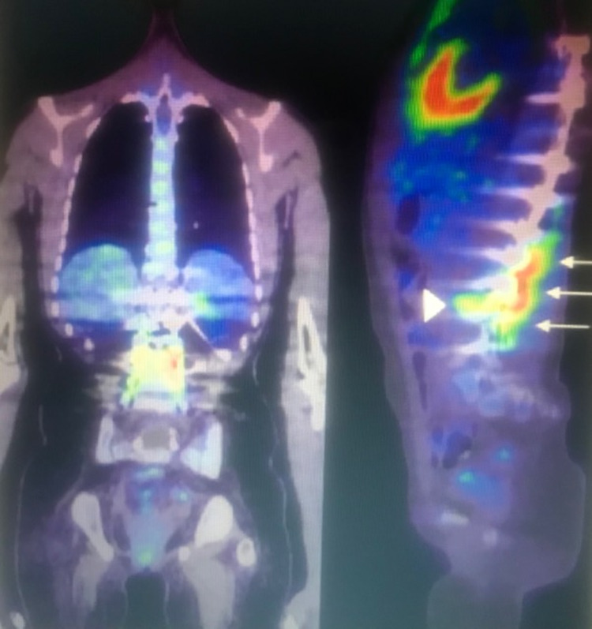
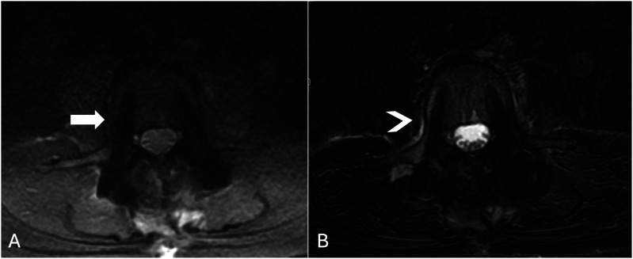
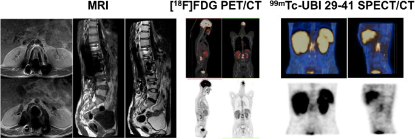

3121 — Nhiễm khuẩn mảnh ghép cột sống ở trẻ (spinal implant infection): "CRP bình thường" không loại trừ, và giữ nẹp hay tháo nẹp
Tags: pattern:nhiem-manh-ghep pattern:o-dich-quanh-ven pattern:ngam-thuoc-vien pattern:khuyet-xuong pattern:long-dung-cu vung:cot-song protocol:MRI-co-can-quang protocol:CT-luong-nang protocol:FDG-PET-CT
Mức chắc chắn (certainty): tổng hợp y văn (literature synthesis) — ghép tổng quan hệ thống nhiễm khuẩn mảnh ghép cột sống (Global Spine J 2022, PMC9210225), nghiên cứu tiến cứu đa trung tâm so MRI – FDG-PET/CT – SPECT/CT ở 63 bệnh nhân (Eur J Nucl Med Mol Imaging 2021, PMC8113215), loạt 30 ca sửa dụng cụ sau mổ vẹo cột sống với 73% nhiễm khuẩn và 100% Cutibacterium acnes (Spine Deform 2023, PMC9970938), loạt trẻ hậu phẫu cột sống (Healthcare 2025, PMC12692130), dữ liệu MAVRIC-SL vs STIR (Global Spine J 2026, PMC12611744) và ca nhi 14 tuổi nhiễm dụng cụ ngực–thắt lưng trên FDG-PET/CT (Cureus 2021, PMC8323075). Không có ca do nhóm tự chụp.
Câu hỏi thực hành: bé gái 13 tuổi, bại não, đã cố định cột sống T2–L4 vì vẹo nặng 8 tháng trước; nay đau lưng tăng dần, sốt nhẹ về chiều, rò dịch ở vết mổ, CRP 6 mg/L, bạch cầu bình thường. X-quang không khác phim cũ. MRI bị vệt đen quanh vít không đọc được. Câu hỏi: nhiễm khuẩn mạn hay long dụng cụ vô khuẩn, và có phải tháo nẹp? Bài chốt ba quyết định: (1) CRP/ESR bình thường không loại trừ nhiễm khuẩn mạn — ở loạt sửa dụng cụ sau mổ vẹo, CRP > 10 mg/L chỉ nhạy 9,1% dù đặc hiệu 100%; (2) MRI có cản quang là chuẩn, nhưng phải có chuỗi giảm kim loại (MAVRIC/SEMAC) và CT lưỡng năng; khi MRI không kết luận → FDG-PET/CT, vì MRI + PET/CT cộng lại AUC 0,938 so với 0,78/0,80 từng phương thức; (3) giữ nẹp chỉ khi dụng cụ còn vững, nhiễm sớm, vi khuẩn nhạy cảm, không có biến chứng thần kinh — nhiễm muộn, dụng cụ mất vững, thất bại DAIR thì phải tháo/thay, nhưng ở trẻ tháo nẹp = mất chỉnh hình và phải mổ lại.
1. Tổng quan bệnh học – cơ chế hình ảnh: vì sao nhiễm khuẩn "ẩn" quanh một thanh titan
- Sinh lý bệnh (pathophysiology): vi khuẩn bám vào bề mặt kim loại và tạo màng sinh học (biofilm) — một lớp glycocalyx bảo vệ, làm kháng sinh kém thấm và làm miễn dịch tại chỗ kém hiệu quả. Vì vậy nhiễm khuẩn mảnh ghép không tạo ổ mủ lớn như áp-xe mô mềm, mà tiến triển âm thầm với long dụng cụ, đau tăng dần, rò dịch, giả khớp.
- Hai khuôn mặt vi sinh — quyết định hình ảnh:
- Sớm, độc lực cao: Staphylococcus aureus (kể cả MRSA) → sốt, sưng, chảy mủ, ổ dịch/áp-xe quanh nẹp, hình ảnh rõ.
- Muộn, độc lực thấp: coagulase-negative staphylococci và Cutibacterium acnes → không sốt, đau mơ hồ, long dụng cụ ± rò, hình ảnh rất kín đáo. Trong 30 ca sửa dụng cụ sau mổ vẹo cột sống: 22/30 (73%) nhiễm khuẩn mảnh ghép, và C. acnes phân lập được ở 100% ca nhiễm (5 ca đa vi khuẩn) (PMC9970938).
- Tần suất — bốn con số:
- Nhiễm khuẩn vết mổ sau phẫu thuật cột sống nói chung: 1,9% (0,1–22,6) — 196 đoàn hệ, 425.180 bệnh nhân; sau cố định dụng cụ: 3,8% (0,4–20) — 39 đoàn hệ, 28.628 bệnh nhân (PMC9210225).
- Trẻ hậu phẫu cột sống: 0,9–3% ở vẹo vô căn, tới 8,7% ở vẹo do bại não; 6,0% nhiễm sâu trong loạt 46 trẻ/67 ca mổ (PMC12692130).
- Nhiễm muộn/sâu sau cố định ở người lớn: 3,5% (25/720) với 12% thất bại DAIR (PMC13300865) — dùng làm mốc so sánh.
- Vì sao trẻ khác người lớn — ba điểm thực hành:
- Thanh tăng trưởng (growing rods/MCGR, VEPTR): dụng cụ phải nong nhiều lần, mỗi lần là một cửa vào nhiễm khuẩn; tháo nẹp = mất kiểm soát đường cong trong khi trẻ còn lớn.
- Nhiều ca mổ lại (sửa dụng cụ, thay thanh) → mô sẹo, mất mốc giải phẫu, khó đọc ảnh.
- Ít mô mỡ, cột sống đang cốt hóa → dễ đọc nhầm vùng sáng sinh lý quanh vít hoặc nhân cốt hóa thành tổn thương.
- TẠI SAO MRI bị "vệt đen" — vật lý của dị vật kim loại:
- Kim loại làm từ trường cục bộ không đồng nhất → mất tín hiệu (signal void) + tích tụ tín hiệu (pile-up) quanh vít/thanh; mức độ tăng theo thể tích kim loại, thép không gỉ > titan, và chuỗi xung nhạy cảm (STIR, EPI) hơn chuỗi spin-echo.
- STIR đặc biệt dễ hỏng vì xung đảo (inversion) đặt sai thời điểm khi từ trường bị méo → mỡ không bị triệt hoặc mô bị triệt oan → giả tổn thương.
- MAVRIC-SL/SEMAC chia phổ tần số thành nhiều "bin" và ghép lại → giảm vùng mất tín hiệu. Đo trên 84 bệnh nhân có dụng cụ thắt lưng: diện tích mất tín hiệu giảm 39,1% (0,809 ± 0,205 cm² vs 1,356 ± 0,266 cm², p < 0,001); thấy lỗ liên hợp 96,4% vs 0% (trục ngang) và tủy sống 98,8% vs 14,3% (trục dọc) (PMC12611744).
- TẠI SAO CT có ích và cũng có bẫy: CT thấy giao diện xương–kim loại, khuyết xương quanh chốt, gãy vít/thanh, giả khớp. Nhưng hiện tượng cứng chùm tia (beam hardening) và thiếu photon tạo vệt sáng/tối; thuật toán giảm kim loại (iMAR) có thể tạo "vùng sáng giả" quanh vít giống hệt long dụng cụ — một ca báo cáo cho thấy khuyết sáng chỉ xuất hiện trên ảnh iMAR, không có trên ảnh gốc (PMC11840993). Vì vậy: luôn đọc cả ảnh chưa xử lý và ảnh đã xử lý; CT lưỡng năng ở 140 keV giảm mạnh vệt kim loại (PMC9543003).
- TẠI SAO FDG-PET/CT "nhìn xuyên" kim loại: FDG tích tụ ở đại thực bào/bạch cầu hoạt hóa — không bị nhiễu từ trường; nhưng mô hạt và viêm sau mổ cũng bắt FDG, nên thời điểm chụp quyết định giá trị. Trong nghiên cứu tiến cứu 63 bệnh nhân nghi nhiễm sau mổ cột sống (73% có dụng cụ kim loại, 48% nhiễm thật): MRI AUC 0,78 (95% CI 0,64–0,92), FDG-PET/CT AUC 0,80 (0,64–0,98), kết hợp hai phương thức AUC 0,938 (0,80–1,00); SPECT/CT với 99mTc-UBI 29-41 kém (nhạy 44% hoặc đặc hiệu 41%) (PMC8113215).
- Nhưng FDG không phải "chân lý": trong nhiễm khuẩn mạn do C. acnes, độ chính xác của FDG-PET/CT chỉ 64% và xạ hình xương 3 pha 67% (PMC9970938); ở 191 ca nghi viêm đĩa đệm–thân sống, PET nhạy 56%, MRI nhạy 62%, kết hợp 74%, nhưng PET đặc hiệu 96% (vs MRI 86%) và phát hiện thêm ổ nhiễm ngoài cột sống ở 73% bệnh nhân (PMC13224376). Đọc đúng: PET giỏi "loại trừ" và tìm ổ xa, MRI giỏi "xác nhận" tổn thương tại chỗ.
2. Mẫu hình + chẩn đoán phân biệt theo thời điểm và theo hình thái (Gamut)
- Theo thời điểm (quyết định chiến lược):
- Sớm (< 1 tháng): sốt, sưng, chảy mủ; ổ dịch quanh nẹp ± khí, viêm mô mềm; tác nhân S. aureus. Điều trị DAIR (debridement + kháng sinh + giữ dụng cụ) có tỉ lệ thành công cao (88% trong loạt 25 ca) (PMC13300865).
- Trung gian (1–3 tháng): hình ảnh mờ hơn, đau tăng dần, ngấm thuốc dọc đường vít; vẫn có thể giữ nẹp.
- Muộn (> 3 tháng, có khi nhiều năm): long dụng cụ, rò dịch, giả khớp; tác nhân C. acnes/CoNS; tháo/thay dụng cụ ở 25% ca muộn vs 11,1% ca sớm (PMC13300865). Đây là nhóm mà CRP bình thường và MRI bị nhiễu kim loại hay đánh lừa nhất.
- Theo hình thái trên ảnh:
- Ổ dịch quanh dụng cụ (periprosthetic fluid): dải dịch T2/STIR tăng tín hiệu, viền ngấm thuốc, dày > 2–3 mm, dọc theo vít/thanh; không thấy ở người lành sau mổ sau 4–6 tuần.
- Viêm mô mềm quanh cột sống: thâm nhiễm cơ cạnh sống, áp-xe trong cơ thắt lưng, hạch.
- Viêm đĩa đệm–thân sống quanh dụng cụ: phù tủy xương hai bên đĩa, phá hủy bản tận, ngấm thuốc đĩa.
- Long dụng cụ: vùng sáng quanh chốt (peri-screw lucency), vít nghiêng/di trú, gãy thanh — nhưng không đặc hiệu (xem cạm bẫy iMAR).
- Giả khớp (pseudarthrosis): khe khớp > 1 năm không cầu xương, vùng sáng hai bên lồng ghép, chuyển động trên phim gập–ưỡn; thường vô khuẩn, nhưng 30–50% có nhiễm khuẩn mạn kèm trong các loạt sửa dụng cụ.
- Gamut "đau lưng sau cố định cột sống ở trẻ": nhiễm khuẩn mảnh ghép (sớm/muộn), long dụng cụ vô khuẩn, giả khớp, bệnh tầng kề (adjacent segment disease), gãy thanh/vít, mất chỉnh hình, seroma/máu tụ sau mổ, di căn/u nguyên phát (nếu có bệnh nền), viêm đĩa đệm do lao (thể chậm, đa tầng).
- Gợi nhớ IMPLANT: Infection (biofilm), Metal artifact (giới hạn MRI), Pseudarthrosis, Loosening, Adjacent segment, Neuro deficit, Timing (sớm/muộn).
3. Bảng so sánh phân biệt (ma trận đối chiếu)
| Thực thể (entity) | Hình ảnh điển hình (XR/CT/MRI/PET) | Chốt vào (rule-in) | Chốt loại (rule-out) | Gợi ý xác nhận |
|---|---|---|---|---|
| Nhiễm khuẩn mảnh ghép sớm (< 1 tháng) | Ổ dịch quanh nẹp ± khí, viêm mô mềm, ngấm thuốc viền; sốt, chảy mủ | Sốt + chảy mủ + ổ dịch ngấm viền quanh dụng cụ | Ổ dịch đơn thuần, không viền, không sốt → seroma | Cấy dịch/vết mổ; DAIR sớm |
| Nhiễm khuẩn mạn, độc lực thấp (C. acnes) | Vùng sáng quanh chốt ± dải dịch mỏng, ngấm thuốc dọc đường vít, rò dịch tái diễn; CRP thường bình thường | Rò tái diễn + long dụng cụ tiến triển + CRP bình thường | Không rò, không tiến triển 6–12 tháng → nghĩ vô khuẩn | Sinh thiết/sonication ≥ 50 CFU/mL, 5 mẫu; PCR/16S |
| Long dụng cụ vô khuẩn (aseptic loosening) | Vùng sáng quanh chốt mảnh, đều, không ngấm thuốc, không dịch, không rò | Sáng quanh chốt đều + không viêm mô mềm + không nhiễm | Dịch/ngấm thuốc/rò → nghi nhiễm | So phim cũ; theo dõi 3–6 tháng |
| Giả khớp (pseudarthrosis) | Khe khớp không cầu xương, vùng sáng hai bên lồng ghép, chuyển động khi gập–ưỡn | Không cầu xương sau 12 tháng + chuyển động | Cầu xương liên tục → không giả khớp | CT đa bình diện; X-quang động |
| Seroma/máu tụ sau mổ | Ổ dịch đồng nhất, vỏ mỏng không ngấm, teo dần; không sốt | Dịch thuần + teo dần 4–6 tuần | Vỏ dày ngấm + khí + sốt → nhiễm | Siêu âm; theo dõi |
| Bệnh tầng kề (adjacent segment) | Thoái hóa đĩa/mặt khớp tầng trên, hẹp ống sống, không dịch quanh dụng cụ | Thay đổi tầng kề + không viêm | Dịch/ngấm quanh dụng cụ → nhiễm | MRI; so phim cũ |
| Viêm đĩa đệm–thân sống quanh dụng cụ | Phù tủy hai bên đĩa, phá hủy bản tận, ngấm thuốc đĩa, có thể áp-xe ngoài màng cứng | Phù tủy + phá hủy bản tận + ngấm đĩa | Chỉ long dụng cụ, đĩa bình thường → không phải đĩa đệm | MRI + sinh thiết; cấy máu |
| U/di căn cột sống | Phá hủy thân sống, mất cuống, ngấm thuốc mạnh, không dịch quanh nẹp | Phá hủy xương ngoài vùng dụng cụ + bệnh nền | Ổ dịch/khí quanh dụng cụ → nhiễm | MRI; PET/CT; sinh thiết |

*Bé 14 tuổi sau cố định T6–L4: (trái) PET/CT trục trán toàn thân; (phải) PET/CT trục dọc — tăng FDG lan tỏa ở xương và mô mềm sát dụng cụ từ T12 đến L4 (mũi tên), kèm tăng FDG ở giao diện xương–vít chân cung L3 trái (đầu mũi tên). Đây là mẫu hình "nhiễm dọc đường dụng cụ" — khác ổ dịch khu trú. Nguồn: Cureus 2021 (PMC8323075), CC BY 4.0.*Ba mẫu hình cần nhớ
- Tăng FDG "dọc thanh nẹp" nhiều tầng: gợi ý nhiễm lan theo màng sinh học, không phải một ổ áp-xe — PET còn giúp tìm ổ nhiễm ngoài cột sống (73% ca trong loạt 191) (PMC13224376).
- MRI: ưu tiên chuỗi giảm kim loại. Cùng một tầng, MAVRIC-SL cho thấy rõ lỗ liên hợp và tủy sống, còn STIR chỉ là "vệt đen + quầng sáng giả" (ảnh dưới).

(A) MAVRIC-SL: bờ vít và mô quanh vít rõ, mất tín hiệu tối thiểu (mũi tên trắng); (B) STIR: vùng mất tín hiệu lan rộng + quầng sáng giả (mũi tên) dễ bị đọc thành phù tổn thương. Diện tích mất tín hiệu giảm 39,1% với MAVRIC-SL (0,809 vs 1,356 cm²). Nguồn: Global Spine J 2026 (PMC12611744), CC BY-NC-ND 4.0 — nguyên bản, không crop.- Ba phương thức trên cùng một bệnh nhân: MRI, FDG-PET/CT và SPECT/CT 99mTc-UBI: PET dương rõ, SPECT/CT UBI không đáng tin (nhạy 44% hoặc đặc hiệu 41%) — đừng chọn UBI cho câu hỏi này (PMC8113215).

Cùng một bệnh nhân: MRI (trái, T1/T2 + T1 sau tiêm), FDG-PET/CT (giữa, ảnh hợp nhất + MIP) và SPECT/CT 99mTc-UBI 29-41 (phải). Ngấm thuốc/FDG quanh dụng cụ T12–L4; SPECT/CT UBI cho kết quả kém tin cậy trong bối cảnh hậu phẫu. Nguồn: Eur J Nucl Med Mol Imaging 2021 (PMC8113215), CC BY 4.0.4. Protocol chụp + ngưỡng và chiến lược "giữ hay tháo"
- Bước 0 — lâm sàng + xét nghiệm trước khi chụp: cấy máu (nếu sốt), cấy dịch vết mổ, CRP/ESR, bạch cầu. Ghi nhớ: CRP < 5 mg/L không loại trừ**; trong nhiễm mạn *C. acnes*, **CRP > 10 mg/L chỉ nhạy 9,1%, ESR > 30 mm/h nhạy 9,1% (PMC9970938) — bình thường là chuyện thường gặp, không phải bằng chứng vô khuẩn.
- Bước 1 — X-quang cột sống (2 bình diện, so phim ngay sau mổ): tìm gãy thanh/vít, vít nghiêng, mất chỉnh hình, vùng sáng quanh chốt, giả khớp. Rẻ, nhanh, nhưng không loại trừ nhiễm khuẩn.
- Bước 2 — MRI có cản quang, bắt buộc có chuỗi giảm kim loại: 1,5 T (hoặc 3 T), MAVRIC-SL/SEMAC + STIR/T2 fat-sat + T1 + T1 sau tiêm fat-sat; đọc dịch quanh dụng cụ, ngấm thuốc viền, viêm mô mềm, áp-xe ngoài màng cứng, phù tủy hai bên đĩa. Tránh kết luận trong 4–6 tuần đầu sau mổ vì ngấm thuốc và dịch sau mổ là sinh lý.
- Bước 3 — CT (lưỡng năng nếu có): VMR 140 keV ± thuật toán giảm kim loại để nhìn giao diện xương–vít (giảm mạnh vệt sáng/tối so với ảnh thường — PMC9543003); đánh giá khuyết xương quanh chốt, vỡ xương, gãy dụng cụ, giả khớp. Luôn so ảnh chưa xử lý vì iMAR có thể tạo khuyết sáng giả (PMC11840993).
- Bước 4 — FDG-PET/CT: chỉ định khi MRI không kết luận hoặc nghi ngờ cao nhưng MRI âm, hoặc cần tìm ổ nhiễm ngoài cột sống; nhớ PET nhạy 56% / đặc hiệu 96%, MRI + PET cộng lại nhạy 74% và AUC 0,938 (PMC13224376, PMC8113215). Không chụp PET quá sớm sau mổ (viêm lành bắt FDG).
- Bước 5 — sinh thiết/khẳng định vi sinh (trước kháng sinh): ≥ 2–3 mẫu mô, tốt nhất 5 mẫu (xác suất phát hiện tới 70% so với 50% với 2–3 mẫu); sonication dịch dụng cụ ≥ 50 CFU/mL; mô bệnh học chỉ nhạy 51% — không dùng mô bệnh để loại trừ (PMC9210225).
- Ngưỡng và quyết định "giữ hay tháo":
- Giữ dụng cụ (DAIR: debridement + kháng sinh + giữ nẹp): dụng cụ còn vững, nhiễm sớm (< 1 tháng), không có biến chứng thần kinh, không có ổ áp-xe lớn cần cắt bỏ, vi khuẩn nhạy cảm — thành công 88% (22/25) trong loạt người lớn (PMC13300865).
- Tháo/thay dụng cụ: mất vững, gãy thanh/vít, biến chứng thần kinh, nhiễm muộn > 3 tháng có biofilm, thất bại DAIR sau 1–2 lần, rò dịch kéo dài. Tỉ lệ tháo 25% ở nhiễm muộn vs 11,1% ở nhiễm sớm (PMC13300865).
- Ở trẻ: cố gắng giữ cấu trúc tăng trưởng nếu còn vững — tháo nẹp ở trẻ đang lớn làm mất chỉnh hình và thường phải mổ lại; nếu buộc tháo, cần kế hoạch thay thế (thanh tạm, nẹp mới sau khi sạch nhiễm).
- Kháng sinh: không có đồng thuận — 6 tuần (sau phẫu thuật) vs 12 tuần (khi giữ dụng cụ/thay một thì) (PMC9210225); luôn phối hợp phẫu thuật + kháng sinh, không điều trị kháng sinh đơn thuần cho dụng cụ mất vững.
- Theo dõi sau điều trị: lâm sàng + CRP/ESR (xu hướng, không phải một điểm), X-quang 3–6 tháng; MRI/CT lại khi đau tái phát hoặc CRP không giảm; không chụp PET lặp lại sớm vì viêm lành còn bắt FDG.
flowchart TD
A[Tre dau lung sau co dinh cot song + ro dich] --> B[XR 2 binh dien so phim cu]
B --> C[CRP ESR cay mau cay dich]
C --> D[MRI co can quang + chuoi giam kim loai]
D --> E{MRI ket luan duoc?}
E -->|Khong| F[CT luong nang 140 keV + doc ca anh chua xu ly]
E -->|Co| G{Co o dich/ngam thuoc quanh dung cu?}
F --> H{Van khong ro}
H -->|Dung| I[FDG-PET/CT tim o nhiem + o ngoai cot song]
H -->|Khong| G
I --> G
G -->|Co| J[Dung cu con vung va nhiem som?]
G -->|Khong| K[Long dung cu vo khuan hoac gia khop - theo doi]
J -->|Co| L[DAIR + khang sinh 6-12 tuan + theo doi]
J -->|Khong| M[Thao hoac thay dung cu + khang sinh]
L --> N{Tai phat hoac CRP khong giam?}
N -->|Co| M
N -->|Khong| O[Theo doi XR 3-6 thang]
5. Biến thể bình thường và cạm bẫy
- "CRP bình thường = không nhiễm": sai. Nhạy 9,1% ở nhiễm mạn C. acnes; CRP < 5 mg/L không phải tiêu chuẩn loại trừ (PMC9970938, PMC9210225). Ngược lại, CRP tăng sau mổ 4–6 tuần có thể do viêm lành.
- Nhiễm khuẩn "ẩn" nhiều năm: Cutibacterium có thể biểu hiện 2–5 năm sau mổ bằng long dụng cụ + rò — không có mốc thời gian nào loại trừ.
- Bẫy iMAR: khuyết sáng quanh vít chỉ thấy trên ảnh đã xử lý → đọc nhầm thành long nhiễm (PMC11840993). Luôn xem ảnh gốc + ảnh xử lý, và so hai lần chụp.
- STIR/tín hiệu cao quanh vít: có thể là hiệu ứng kim loại (nhất là thép không gỉ) chứ không phải phù — dùng MAVRIC/SEMAC, và đối chiếu T1 sau tiêm (viêm thật ngấm thuốc, artifact thì không).
- "Một lần MRI sạch" sau mổ: trong 4–6 tuần đầu, dịch và ngấm thuốc quanh dụng cụ là sinh lý; kết luận nhiễm khuẩn cần bối cảnh lâm sàng + vi sinh.
- PET dương sau mổ: mô hạt và viêm lành bắt FDG; PET nhạy 56% nhưng không đủ để chẩn đoán một mình; giá trị lớn nhất là khi MRI không kết luận và tìm ổ ngoài cột sống.
- Chỉ nhìn cột sống, bỏ sót ổ ngoài cột sống: 73% ca có ổ nhiễm ngoài cột sống được PET phát hiện (răng, tim, tiết niệu, catheter) — sót ổ nguyên phát = tái phát.
- Bỏ sót tầng thứ hai: nhiễm có thể nhiều tầng (skip lesion); đọc toàn bộ cột sống trên MRI/PET, không dừng ở tầng đau.
- Trẻ đang lớn — "vùng sáng" sinh lý: nhân cốt hóa chưa hợp nhất, sụn tiếp hợp, mô sẹo sau mổ có thể giống khuyết xương; so phim ngay sau mổ là cách tránh overcall.
- Tháo nẹp quá sớm ở trẻ: mất chỉnh hình, cần mổ lớn lại — quyết định tháo cần hội chẩn (phẫu thuật cột sống + nhiễm + phục hồi chức năng).
6. Tự lượng giá — Blind Quiz
Ca 1 — Bé trai 14 tuổi, cố định T6–L4 vì vẹo; 9 tháng sau đau lưng, sốt nhẹ, không rò dịch. Nhìn ảnh, mô tả trước.
- Gợi ý lâm sàng: CRP tăng nhẹ, MRI bị nhiễu kim loại nặng, không thấy ổ dịch rõ.
- Câu hỏi: (1) Mẫu hình FDG gợi ý gì? (2) Vì sao không kết luận ngay "nhiễm khuẩn mảnh ghép"? (3) Bước tiếp theo để có bằng chứng vi sinh?
Bấm để hiện đáp án
- Dấu hiệu: tăng FDG lan tỏa dọc dụng cụ T12–L4 ở xương và mô mềm sát nẹp, tăng ở giao diện xương–vít L3 trái.
- Chẩn đoán nghĩ đến: nhiễm khuẩn mảnh ghép lan theo màng sinh học; nhưng FDG cũng dương trong viêm lành/mô hạt, và độ chính xác chỉ 64% ở nhiễm mạn do C. acnes.
- Bước tiếp: sinh thiết xuyên kim qua CT ≥ 2–3 mẫu (tốt nhất 5), sonication nếu tháo dụng cụ, cấy máu, và hội chẩn giữ/tháo nẹp.
- Nguồn ảnh: Cureus 2021 (PMC8323075), CC BY 4.0.
Ca 2 — Cùng bệnh nhi, MRI bị vệt đen quanh vít. Chọn chuỗi nào và đọc ra sao?
- Câu hỏi: (1) Vì sao (B) dễ đọc nhầm? (2) Chuỗi (A) cải thiện cái gì, bao nhiêu?
Bấm để hiện đáp án
- (B) STIR: xung đảo sai thời điểm do từ trường méo → mất tín hiệu rộng + quầng sáng giả, dễ gọi là "phù quanh vít".
- (A) MAVRIC-SL: diện tích mất tín hiệu giảm 39,1% (0,809 vs 1,356 cm²); thấy lỗ liên hợp 96,4% vs 0%, tủy sống 98,8% vs 14,3%.
- Cách đọc: chỉ gọi viêm khi có ngấm thuốc thật trên T1 sau tiêm + dịch viền + bối cảnh lâm sàng.
- Nguồn ảnh: Global Spine J 2026 (PMC12611744), CC BY-NC-ND 4.0 (nguyên bản).
Ca 3 — Bé gái 8 tuổi có thanh tăng trưởng (growing rod), 2 năm sau mổ: đau lưng, rò dịch tái diễn, CRP 4 mg/L, không sốt. Bạn làm gì?
- Câu hỏi: (1) Ba chẩn đoán phân biệt? (2) Có nên tháo nẹp ngay không? (3) Xét nghiệm/ hình ảnh nào trước?
Bấm để hiện đáp án
- Phân biệt: nhiễm khuẩn mạn do C. acnes/CoNS, long dụng cụ vô khuẩn, rò dịch do da/mô mềm (nhiễm nông), giả khớp.
- Không tháo nẹp ngay: CRP bình thường không loại trừ, và tháo nẹp ở trẻ đang lớn làm mất chỉnh hình. Trước hết: MRI có MAVRIC/SEMAC + cản quang (hoặc CT lưỡng năng nếu MRI nhiễu), cấy dịch rò + cấy máu, sinh thiết/sonication khi can thiệp.
- Nếu dụng cụ còn vững + nhiễm khuẩn khu trú + vi khuẩn nhạy: DAIR + kháng sinh 6–12 tuần, theo dõi sát; tháo/thay khi mất vững, thất bại DAIR, hoặc nhiễm lan tỏa.
- Nguyên tắc: chẩn đoán vi sinh trước, quyết định dụng cụ sau — và quyết định này cần hội chẩn đa chuyên khoa.
Bài liên quan chéo
- 6163 – Viêm đĩa đệm–thân sống & phình ĐMC nhiễm khuẩn
- 171 – Bóc tách động mạch chủ bụng và IMH
- 148 – Nhiễm trùng mảnh ghép nội mạch ĐMC (cùng nguyên lý biofilm trên vật liệu tổng hợp)
- 1986 – Viêm mô hoại tử ở trẻ
- 3111 – Thoát vị lỗ trocar sau nội soi
Ảnh
images/3121_nhiem-manh-ghep_PET-CT_Cureus2021-PMC8323075.jpg— Cureus 2021 (PMC8323075), CC BY 4.0.images/3121_nhiem-manh-ghep_MRI-PET-CT_EJNMMI2021-PMC8113215.jpg— Eur J Nucl Med Mol Imaging 2021 (PMC8113215), CC BY 4.0.images/3121_nhiem-manh-ghep_MRI_GSJ2026-PMC12611744.jpg— Global Spine J 2026 (PMC12611744), CC BY-NC-ND 4.0 (nguyên bản).- Nguồn, giấy phép và ghi chú từng ảnh:
images/CREDITS.md.
Không dùng để chẩn đoán độc lập khi chưa có người hướng dẫn.